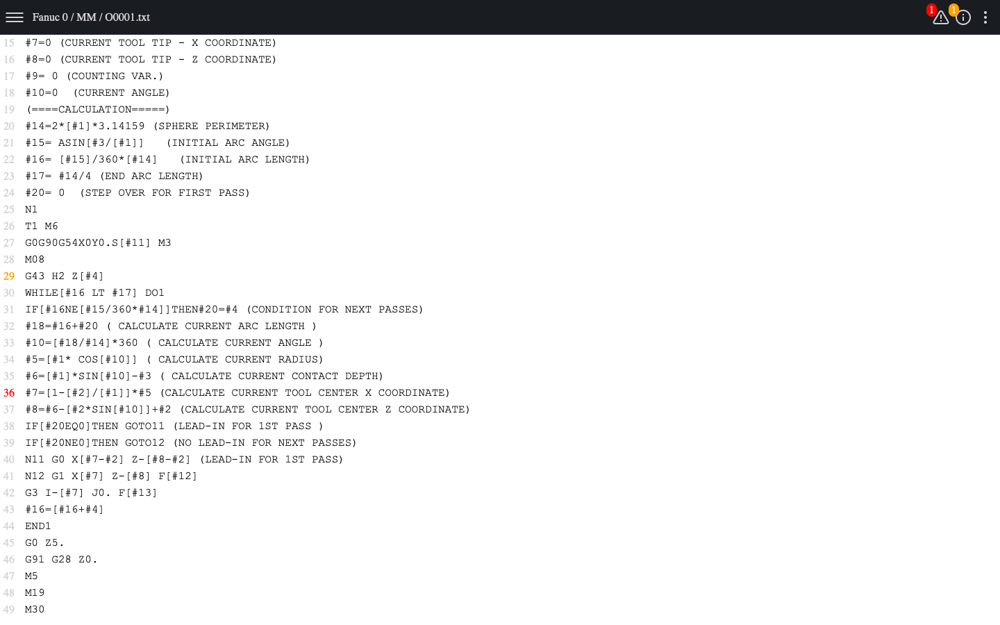
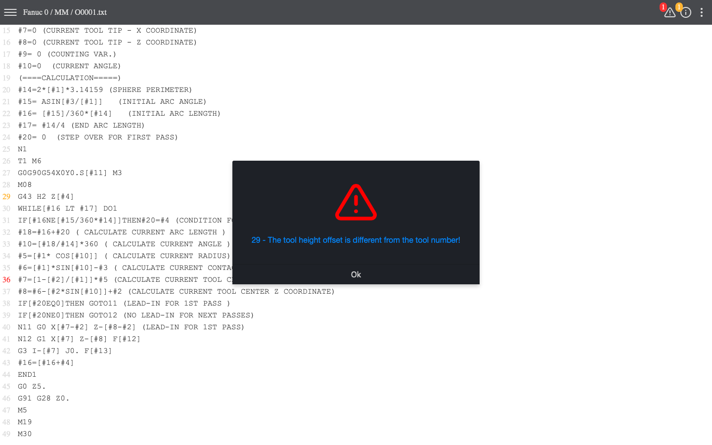
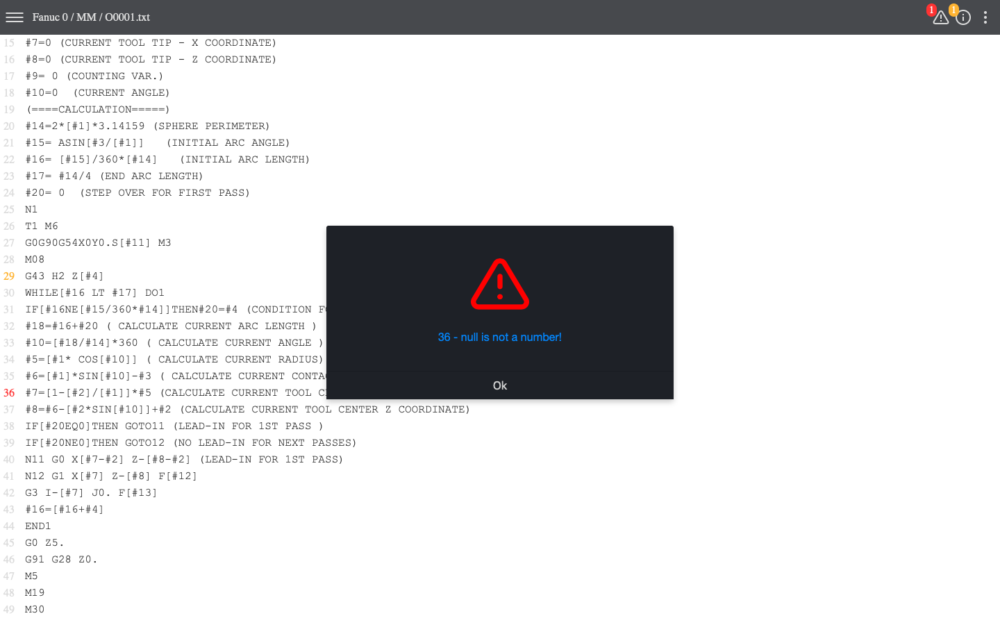
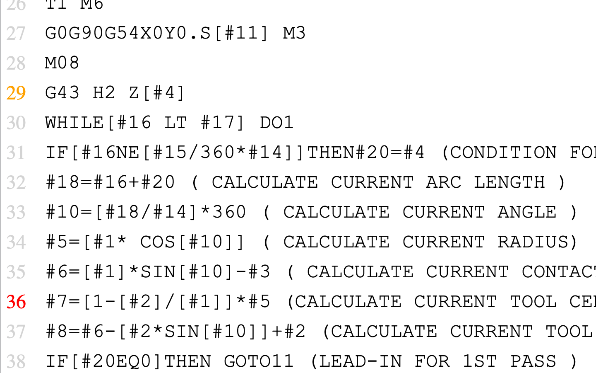
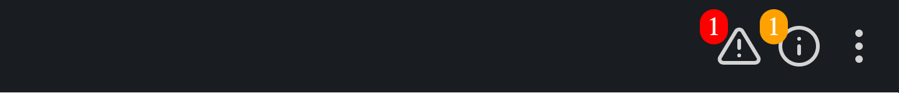
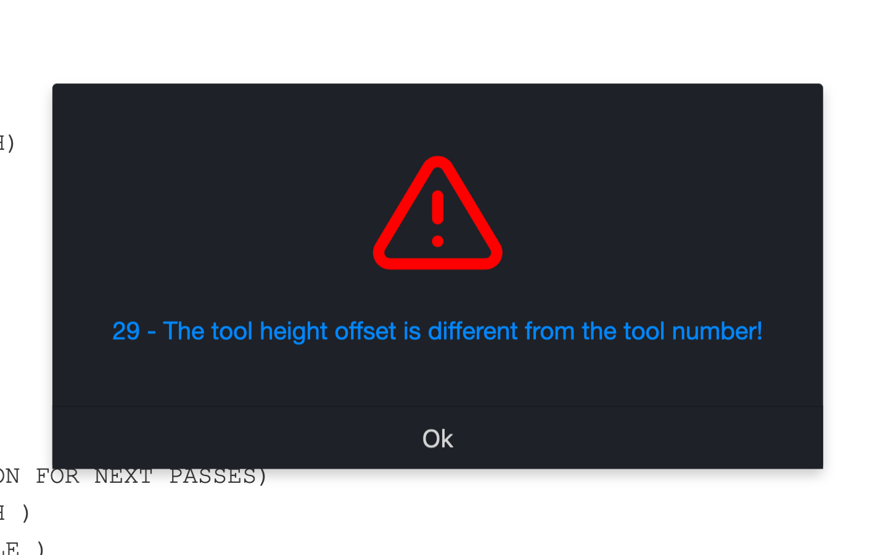

AVS - Advanced Validation System
About AVS
AVS (Advanced Validation System) - is a security system that checks the code for the most dangerous errors that can only be caught by an experienced CNC programmer. AVS is so far able to test your code against over 40 potentially dangerous scenarios.
AVS is made up of three elements:
1. On-the-fly code verification (code verification already when writing the program)
2. Run-time check (code testing for potential syntax errors, incorrect values such as "null", etc.)
3. Additional checking of already pure G code (converted from macro) for potential errors
Why using AVS is so important?
Remember that the unit cost of most CNC machines starts at hundreds of thousands of dollars. Also, any damage to the tool means high costs (e.g., end mills) and wasted time on its replacement and measurements, and often needed changes in the CNC program. Even the smallest error can immobilize your CNC machine for many months or cause a dangerous accident! AVS can prevent many potentially dangerous situations by checking your code before running it on a milling machine or machining centers.
But I am an experienced CNC programmer / machinist. Why should I use AVS?
Remember that the human brain works much slower in the morning or late hours. Also at work requiring a lot of concentration and precision, after 4-5 hours there is a lot of fatigue. This can create a dangerous situation in your workplace. AVS in Macro Mill Plus CNC does not need time to rest. It is always ready to help you create a better and safer CNC program. .
How easy is to undestand warning and alerts from AVS?
AVS will notify you by displaying a red shield (if there is an error, the run button will disappear) or an orange shield (if there is a warning) in the top bar.
The line number will also be marked in color. For more information about a potential alert or warning, you can press the line number. After clicking, a window with a description of the situation should appear.
As you can see it is very simple.